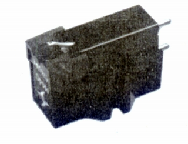
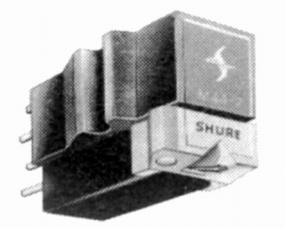
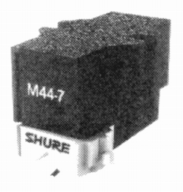
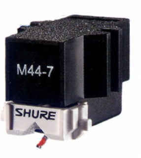

M44-7


■価格 10,800円
■発電方式 MM型
■出力電圧 11mV
■針圧 1.5〜3g
■再生周波数帯域 20-20,000Hz
■チャンネルセパレーション 25dB
■チャンネルバランス
■コンプライアンス
■負荷抵抗
47kΩ
■負荷容量
■インピーダンス
■針先 0.7mil
■自重 7g
■交換針 N44-7(6,150円)
■発売
〜1970年
■販売終了 1996〜98年頃
■備考 価格は1970年頃のもの
1974年には7,500円
N44-7(5,100円)
1976年には7,900円
1979年頃には8,500円 N44-7(3,700円)
1981年頃には9,200円
N44-7(4,000円)
1983年頃には10,000円
1985年頃にはN44-7(4,400円)
1987年頃には8,900円 N44-7(4,200円)
1985年の資料では自重 6.5g 出力電圧 9.5mV
1990年代後半に、後継モデルM447Xの発売で一旦製造中止となったが、
1999年に復活した

■価格 11,000円
■発電方式 MM型
■出力電圧 9.5mV
■針圧 1.5〜3g
■再生周波数帯域
■チャンネルセパレーション
■チャンネルバランス
■コンプライアンス
■負荷抵抗
■負荷容量
■インピーダンス
■針先 円錐
■自重 6.7g
■交換針 N44-7(5,400円)
■発売
1999年
■販売終了 年頃
■備考 現在ではオープン価格で販売されている。

（最近のカタログより）